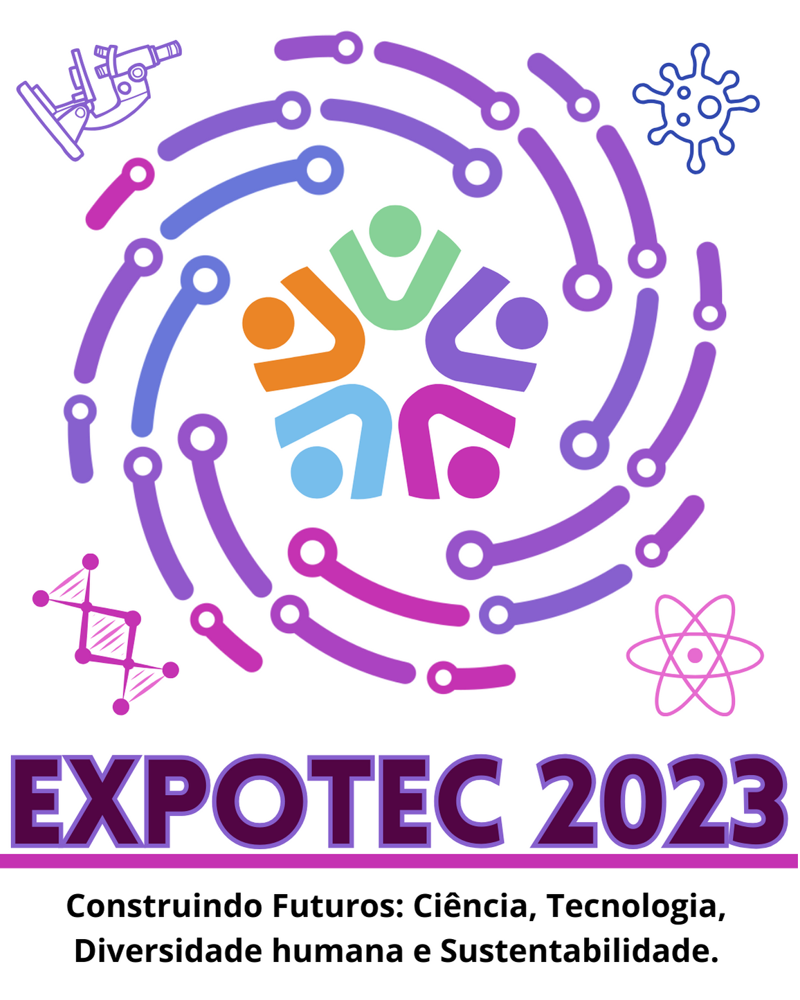

A Exposição Científica, Tecnológica e Cultural - EXPOTEC é um evento promovido pelo Instituto Federal de Educação, Ciência e Tecnologia do Rio Grande do Norte, campus Parelhas, cujo objetivo é promover a partilha de conhecimentos e experiências provenientes de projetos de pesquisa, ensino e extensão desenvolvidos por estudantes e servidores ao longo do ano de 2023. Neste ano, a 5° Edição da EXPOTEC celebrará o tema “Construindo futuros: Ciência, Tecnologia, Diversidade humana e Sustentabilidade”, visando discutir os desafios e as contribuições das diversas áreas do conhecimento frente ao mundo digital cada vez mais presente no cotidiano das pessoas, especialmente após o advento da pandemia.